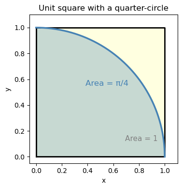
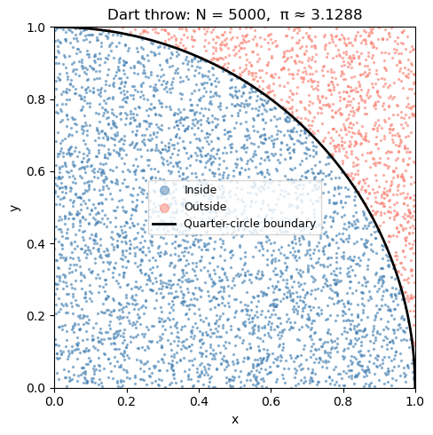
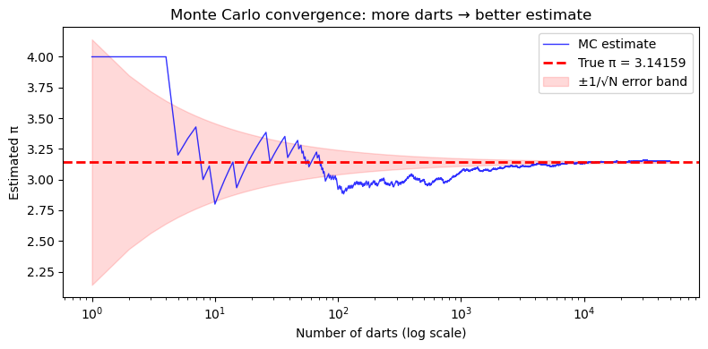
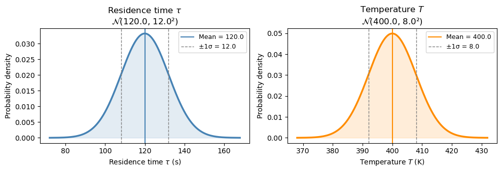
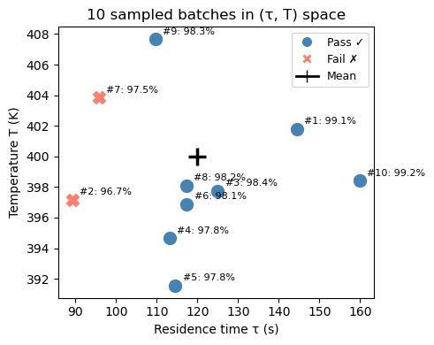
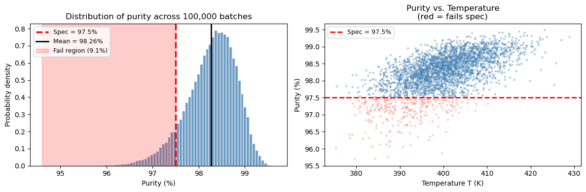

Chapter 14: Monte Carlo Simulation#
14.1 What Is Monte Carlo Simulation?#
Imagine you’re designing a reactor, but you don’t know the exact feed temperature — it fluctuates a bit every day. How does that uncertainty in temperature affect the conversion you get out?
You could try to work this out analytically (with calculus and error propagation formulas), but what if the relationship between temperature and conversion is nonlinear? What if multiple inputs are uncertain at once?
Monte Carlo simulation is a simple, powerful alternative:
Instead of solving the math analytically, just try it thousands of times with randomly sampled inputs, and look at what comes out.
The name comes from the Monte Carlo casino in Monaco — the core idea is random sampling, just like rolling dice.
The three-step recipe#
Define your uncertain inputs as probability distributions
(e.g., “temperature is normally distributed with mean 400 K and std 5 K”)Draw thousands of random samples from those distributions
(e.g., sample 100,000 temperatures from that normal distribution)Run your model for every sample, then look at the output distribution
(e.g., compute conversion for each temperature → plot the histogram of conversions)
Why is this useful for chemical engineers?#
Uncertainty propagation: How does uncertainty in activation energy \(E_a\) affect predicted conversion?
Process reliability: What fraction of batches will meet the purity spec given normal operating variability?
Risk assessment: What is the probability that reactor temperature exceeds a safety limit?
Equipment sizing: Given uncertain feed compositions, what reactor volume ensures 99% of scenarios achieve the desired conversion?
14.2 Building Intuition: Estimating π by Throwing Darts#
Before tackling engineering problems, let’s build intuition with a playful classic example.
The setup: Imagine throwing darts randomly at a square dartboard. Inside the square, there’s a quarter-circle drawn in the corner. If your throws are truly random (uniform), what fraction of darts land inside the quarter-circle?
Run the cell below to see it — then we’ll work out the math.
import numpy as np
import matplotlib.pyplot as plt
fig, ax = plt.subplots(figsize=(4, 4))
# Square
ax.fill([0, 1, 1, 0], [0, 0, 1, 1], color='lightyellow', zorder=0)
ax.plot([0, 1, 1, 0, 0], [0, 0, 1, 1, 0], 'k-', linewidth=2)
# Quarter-circle region
theta = np.linspace(0, np.pi/2, 300)
ax.fill_between(np.cos(theta), np.sin(theta), 0,
color='steelblue', alpha=0.3, label='Quarter-circle (area = π/4)')
ax.plot(np.cos(theta), np.sin(theta), 'steelblue', linewidth=2.5)
# Labels
ax.text(0.55, 0.55, 'Area = π/4', color='steelblue', fontsize=12, ha='center')
ax.text(0.82, 0.12, 'Area = 1', color='gray', fontsize=11, ha='center')
ax.set_aspect('equal')
ax.set_xlim(-0.05, 1.1); ax.set_ylim(-0.05, 1.1)
ax.set_xlabel('x'); ax.set_ylabel('y')
ax.set_title('Unit square with a quarter-circle')
plt.tight_layout()
plt.show()

Notice that the blue darts (inside the quarter-circle) fill roughly 78% of the square — and \(\pi/4 \approx 0.785\). That’s no coincidence!
The square has area \(1 \times 1 = 1\).
The quarter-circle of radius 1 has area \(\dfrac{\pi}{4}\).
So the fraction of darts inside is: $\( \frac{\text{darts inside}}{\text{total darts}} \approx \frac{\pi/4}{1} = \frac{\pi}{4} \quad \Longrightarrow \quad \hat{\pi} \approx 4 \times \frac{\text{darts inside}}{\text{total darts}} \)$
We can use this to estimate \(\pi\) just by counting random points. Let’s do it properly with more darts.
import numpy as np
import matplotlib.pyplot as plt
# --- Step 1: Set up the random number generator ---
# Using a fixed seed so results are reproducible (same "random" numbers every run)
rng = np.random.default_rng(seed=0)
# --- Step 2: Throw random darts ---
N = 5000 # number of darts (try changing this!)
x = rng.random(N) # x-coordinates uniformly between 0 and 1
y = rng.random(N) # y-coordinates uniformly between 0 and 1
# --- Step 3: Check which darts land inside the quarter-circle ---
# A point (x, y) is inside the quarter-circle if x² + y² ≤ 1
inside = (x**2 + y**2) <= 1.0
# --- Step 4: Estimate π ---
pi_estimate = 4.0 * np.sum(inside) / N
print(f"Number of darts: {N}")
print(f"Darts inside quarter-circle: {np.sum(inside)}")
print(f"Fraction inside: {np.mean(inside):.4f}")
print(f"Estimated π = 4 × {np.mean(inside):.4f} = {pi_estimate:.4f}")
print(f"True π = {np.pi:.4f}")
print(f"Error = {abs(pi_estimate - np.pi):.4f}")
Number of darts: 5000
Darts inside quarter-circle: 3911
Fraction inside: 0.7822
Estimated π = 4 × 0.7822 = 3.1288
True π = 3.1416
Error = 0.0128
Visualizing the dart throw#
Let’s plot the darts — blue for inside the quarter-circle, red for outside. You can see how the ratio of blue to total gives us π/4.
fig, ax = plt.subplots(figsize=(5, 5))
ax.scatter(x[inside], y[inside], s=2, color='steelblue', alpha=0.5, label='Inside')
ax.scatter(x[~inside], y[~inside], s=2, color='salmon', alpha=0.5, label='Outside')
# Draw the quarter-circle boundary
theta = np.linspace(0, np.pi/2, 300)
ax.plot(np.cos(theta), np.sin(theta), 'k-', linewidth=2, label='Quarter-circle boundary')
ax.set_aspect('equal')
ax.set_xlim(0, 1); ax.set_ylim(0, 1)
ax.set_xlabel('x'); ax.set_ylabel('y')
ax.set_title(f'Dart throw: N = {N}, π ≈ {pi_estimate:.4f}')
ax.legend(fontsize=9, markerscale=5)
plt.tight_layout()
plt.show()

How many darts do we need?#
More darts = better estimate. But how fast does the estimate improve?
The key insight: the error in a Monte Carlo estimate shrinks as \(\sim 1/\sqrt{N}\).
That means to get 10× more accurate, you need 100× more samples.
This is Monte Carlo’s main limitation — it’s not very efficient for 1D problems. But it shines for high-dimensional problems (many uncertain inputs), where traditional methods become impractical.
# Throw 50,000 darts and track the running estimate of π
rng2 = np.random.default_rng(seed=0)
N_total = 50_000
x_all = rng2.random(N_total)
y_all = rng2.random(N_total)
inside_all = (x_all**2 + y_all**2) <= 1.0
# Running estimate after each dart
N_run = np.arange(1, N_total + 1)
pi_running = 4.0 * np.cumsum(inside_all) / N_run
# Plot convergence
fig, ax = plt.subplots(figsize=(8, 4))
ax.semilogx(N_run, pi_running, 'b-', linewidth=1, alpha=0.8, label='MC estimate')
ax.axhline(np.pi, color='red', linestyle='--', linewidth=2, label=f'True π = {np.pi:.5f}')
ax.fill_between(N_run, np.pi - 1/np.sqrt(N_run), np.pi + 1/np.sqrt(N_run),
alpha=0.15, color='red', label='±1/√N error band')
ax.set_xlabel('Number of darts (log scale)')
ax.set_ylabel('Estimated π')
ax.set_title('Monte Carlo convergence: more darts → better estimate')
ax.legend()
plt.tight_layout()
plt.show()
print(f"Final estimate with {N_total:,} darts: π ≈ {pi_running[-1]:.5f} (true: {np.pi:.5f})")

Final estimate with 50,000 darts: π ≈ 3.14968 (true: 3.14159)
14.3 A Real Engineering Problem: Process Reliability#
Now let’s apply Monte Carlo to a chemical engineering scenario.
Problem statement#
A chemical product must have purity ≥ 97.5% to be sold. The purity depends on two process variables that fluctuate daily due to normal operating variability:
Variable |
Symbol |
Distribution |
|---|---|---|
Residence time (s) |
\(\tau\) |
\(\mathcal{N}(\mu=120,\, \sigma=12)\) |
Temperature (K) |
\(T\) |
\(\mathcal{N}(\mu=400,\, \sigma=8)\) |
The purity model is: $\( \text{Purity} = 100 \times \left(1 - 0.2\, e^{-k(T)\,\tau} \right), \quad k(T) = \exp\!\left(\frac{-1550}{T}\right) \)$
Question: What fraction of batches will fail the purity spec?
We’ll build up to the full simulation in four steps:
Visualize the input distributions
Compute purity at the mean values — and ask: is that enough information?
Sample a few batches by hand to see success and failure cases
Run the full Monte Carlo
Step 1: Visualize the input distributions#
Before running any simulation, let’s see what the two uncertain inputs look like. Each day, τ and T are drawn from their respective normal distributions.
import numpy as np
import matplotlib.pyplot as plt
from scipy import stats
tau_mean, tau_std = 120.0, 12.0 # residence time (s)
T_mean, T_std = 400.0, 8.0 # temperature (K)
fig, axes = plt.subplots(1, 2, figsize=(10, 3.5))
for ax, mean, std, label, unit, color in [
(axes[0], tau_mean, tau_std, r'Residence time $\tau$', 's', 'steelblue'),
(axes[1], T_mean, T_std, r'Temperature $T$', 'K', 'darkorange'),
]:
x = np.linspace(mean - 4*std, mean + 4*std, 300)
ax.plot(x, stats.norm.pdf(x, mean, std), color=color, linewidth=2.5)
ax.fill_between(x, stats.norm.pdf(x, mean, std), alpha=0.15, color=color)
ax.axvline(mean, color=color, linestyle='-', linewidth=1.5, label=f'Mean = {mean}')
ax.axvline(mean - std, color='gray', linestyle='--', linewidth=1, label=f'±1σ = {std}')
ax.axvline(mean + std, color='gray', linestyle='--', linewidth=1)
ax.set_xlabel(f'{label} ({unit})')
ax.set_ylabel('Probability density')
ax.set_title(f'{label}\n' + r'$\mathcal{N}$' + f'({mean}, {std}²)')
ax.legend(fontsize=9)
plt.tight_layout()
plt.show()

Step 2: Purity at the mean values#
A natural first question: if everything runs at its mean value, what is the purity?
def purity_model(tau, T):
k = np.exp(-1550.0 / T)
return 100.0 * (1.0 - 0.2 * np.exp(-k * tau))
spec = 97.5 # minimum acceptable purity (%)
purity_at_mean = purity_model(tau_mean, T_mean)
print(f"At mean conditions: τ = {tau_mean} s, T = {T_mean} K")
print(f" k(T_mean) = {np.exp(-1550/T_mean):.5f} s⁻¹")
print(f" k·τ = {np.exp(-1550/T_mean)*tau_mean:.3f}")
print(f" Purity = {purity_at_mean:.3f} %")
print()
if purity_at_mean >= spec:
print(f" Passes spec ({spec}%) at the mean — but does every batch pass?")
else:
print(f" Already fails spec ({spec}%) at the mean!")
At mean conditions: τ = 120.0 s, T = 400.0 K
k(T_mean) = 0.02075 s⁻¹
k·τ = 2.491
Purity = 98.343 %
Passes spec (97.5%) at the mean — but does every batch pass?
Step 3: A few sampled batches — success and failure#
The mean purity looks fine. But each real batch runs at a slightly different τ and T. Let’s sample 10 batches and compute purity for each one to see how much it varies.
rng = np.random.default_rng(seed=3)
n_preview = 10
tau_s = rng.normal(tau_mean, tau_std, n_preview)
T_s = rng.normal(T_mean, T_std, n_preview)
pur_s = purity_model(tau_s, T_s)
print(f"{'Batch':>5} {'τ (s)':>8} {'T (K)':>8} {'Purity (%)':>11} {'Result':>8}")
print("-" * 50)
for i in range(n_preview):
result = "PASS ✓" if pur_s[i] >= spec else "FAIL ✗"
print(f" {i+1:>3} {tau_s[i]:>8.1f} {T_s[i]:>8.1f} {pur_s[i]:>11.3f} {result:>8}")
Batch τ (s) T (K) Purity (%) Result
--------------------------------------------------
1 144.5 401.8 99.054 PASS ✓
2 89.3 397.2 96.706 FAIL ✗
3 125.0 397.7 98.420 PASS ✓
4 113.2 394.7 97.847 PASS ✓
5 114.6 391.6 97.755 PASS ✓
6 117.4 396.9 98.118 PASS ✓
7 95.8 403.9 97.457 FAIL ✗
8 117.2 398.1 98.164 PASS ✓
9 109.6 407.7 98.269 PASS ✓
10 159.9 398.4 99.238 PASS ✓
fig, ax = plt.subplots(figsize=(5, 4))
for i in range(n_preview):
color = 'steelblue' if pur_s[i] >= spec else 'salmon'
marker = 'o' if pur_s[i] >= spec else 'X'
label = ('Pass ✓' if pur_s[i] >= spec else 'Fail ✗') if i == 0 or (pur_s[i] >= spec) != (pur_s[i-1] >= spec) else ''
ax.scatter(tau_s[i], T_s[i], color=color, marker=marker, s=100, zorder=3)
ax.annotate(f"#{i+1}: {pur_s[i]:.1f}%", (tau_s[i], T_s[i]),
textcoords='offset points', xytext=(6, 4), fontsize=8)
# Mark the mean
ax.scatter(tau_mean, T_mean, color='black', marker='+', s=200, linewidths=2.5,
zorder=4, label='Mean (τ, T)')
# Legend proxies
from matplotlib.lines import Line2D
handles = [
Line2D([0],[0], marker='o', color='w', markerfacecolor='steelblue', markersize=9, label='Pass ✓'),
Line2D([0],[0], marker='X', color='w', markerfacecolor='salmon', markersize=9, label='Fail ✗'),
Line2D([0],[0], marker='+', color='black', markersize=10, linewidth=2, label='Mean'),
]
ax.legend(handles=handles, fontsize=9)
ax.set_xlabel('Residence time τ (s)')
ax.set_ylabel('Temperature T (K)')
ax.set_title('10 sampled batches in (τ, T) space')
plt.tight_layout()
plt.show()

With only 10 batches we can already see some failures — but 10 is not enough to reliably estimate the failure rate. We need to scale this up to thousands of batches. That’s exactly what Monte Carlo does.
Step 4: Full Monte Carlo — 100,000 batches#
rng_mc = np.random.default_rng(seed=42)
N_mc = 100_000
# Sample all batches at once
tau_mc = rng_mc.normal(tau_mean, tau_std, N_mc)
T_mc = rng_mc.normal(T_mean, T_std, N_mc)
pur_mc = purity_model(tau_mc, T_mc)
frac_fail = np.mean(pur_mc < spec)
frac_pass = 1.0 - frac_fail
print("=" * 45)
print(f" Monte Carlo results (N = {N_mc:,} batches)")
print("=" * 45)
print(f" Mean purity: {np.mean(pur_mc):.3f} %")
print(f" Std dev: {np.std(pur_mc, ddof=1):.3f} %")
print(f" 5th percentile: {np.percentile(pur_mc, 5):.3f} %")
print(f" Spec limit: {spec} %")
print(f" Fraction PASSING: {frac_pass:.4f} ({100*frac_pass:.2f}%)")
print(f" Fraction FAILING: {frac_fail:.4f} ({100*frac_fail:.2f}%)")
print("=" * 45)
fig, axes = plt.subplots(1, 2, figsize=(12, 4))
# Left: purity histogram
ax = axes[0]
ax.hist(pur_mc, bins=80, density=True, color='steelblue', edgecolor='white', alpha=0.8)
ax.axvline(spec, color='red', linestyle='--', linewidth=2.5, label=f'Spec = {spec}%')
ax.axvline(np.mean(pur_mc), color='k', linestyle='-', linewidth=2,
label=f'Mean = {np.mean(pur_mc):.2f}%')
ymax = ax.get_ylim()[1]
ax.fill_betweenx([0, ymax], pur_mc.min(), spec,
alpha=0.2, color='red', label=f'Fail region ({100*frac_fail:.1f}%)')
ax.set_ylim(0, ymax)
ax.set_xlabel('Purity (%)'); ax.set_ylabel('Probability density')
ax.set_title('Distribution of purity across 100,000 batches')
ax.legend(fontsize=9)
# Right: purity vs temperature scatter (subset)
ax = axes[1]
n_plot = 3000
colors = np.where(pur_mc[:n_plot] < spec, 'salmon', 'steelblue')
ax.scatter(T_mc[:n_plot], pur_mc[:n_plot], c=colors, alpha=0.3, s=5)
ax.axhline(spec, color='red', linestyle='--', linewidth=2, label=f'Spec = {spec}%')
ax.set_xlabel('Temperature T (K)'); ax.set_ylabel('Purity (%)')
ax.set_title('Purity vs. Temperature\n(red = fails spec)')
ax.legend(fontsize=9)
plt.tight_layout()
plt.show()
=============================================
Monte Carlo results (N = 100,000 batches)
=============================================
Mean purity: 98.265 %
Std dev: 0.546 %
5th percentile: 97.264 %
Spec limit: 97.5 %
Fraction PASSING: 0.9089 (90.89%)
Fraction FAILING: 0.0911 (9.11%)
=============================================

What did we learn from this simulation?#
The mean purity (~98.3%) is above the spec, which might make you think the process is fine.
But the output distribution has a spread of ~0.5–0.7%, so the tail dips below 97.5%.
Monte Carlo tells us roughly ~9% of batches will fail — a number you cannot get from just computing purity at the mean.
The scatter plot shows failures cluster at lower temperatures and shorter residence times — both reduce the rate constant and slow the reaction.
This is the central lesson: the mean alone is not enough. You need the full distribution.
14.4 Summary#
Concept |
Key idea |
|---|---|
Monte Carlo simulation |
Estimate outputs by sampling inputs randomly and running the model many times |
Random number generator |
|
Sampling from a distribution |
|
Output analysis |
Use |
Convergence |
Error shrinks as \(\sim 1/\sqrt{N}\) — more samples = more accurate |
The Monte Carlo template (reuse this!)#
import numpy as np
rng = np.random.default_rng(seed=42)
N = 100_000
# 1. Sample inputs
x1 = rng.normal(mean1, std1, N)
x2 = rng.normal(mean2, std2, N)
# 2. Compute output for all samples at once
output = my_model(x1, x2) # works if my_model uses numpy operations
# 3. Summarize
print(f"Mean: {np.mean(output):.3f}")
print(f"Std: {np.std(output):.3f}")
print(f"P(output < threshold) = {np.mean(output < threshold):.4f}")